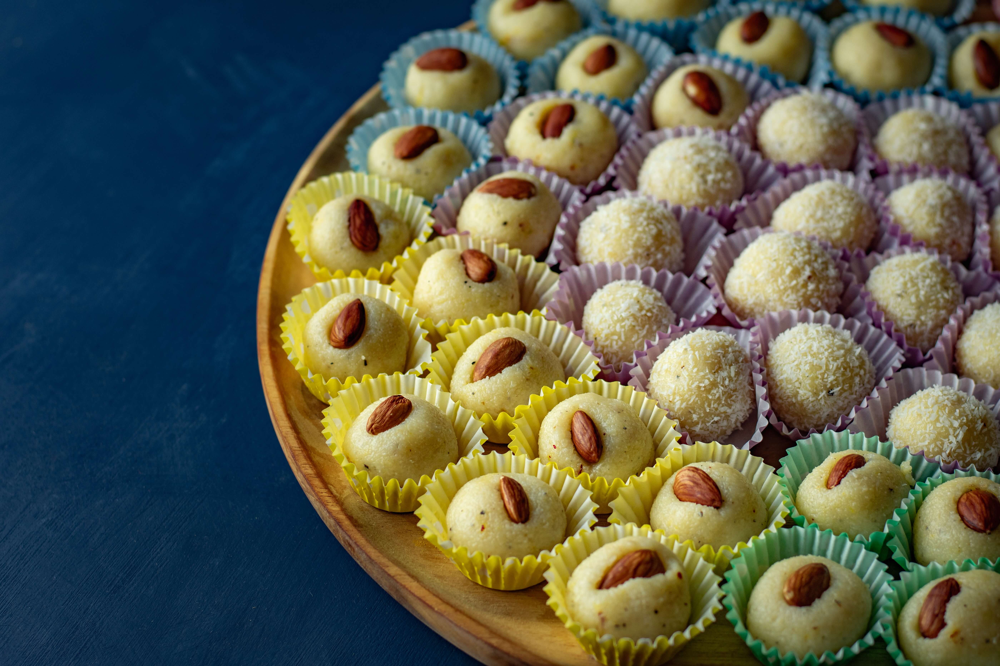
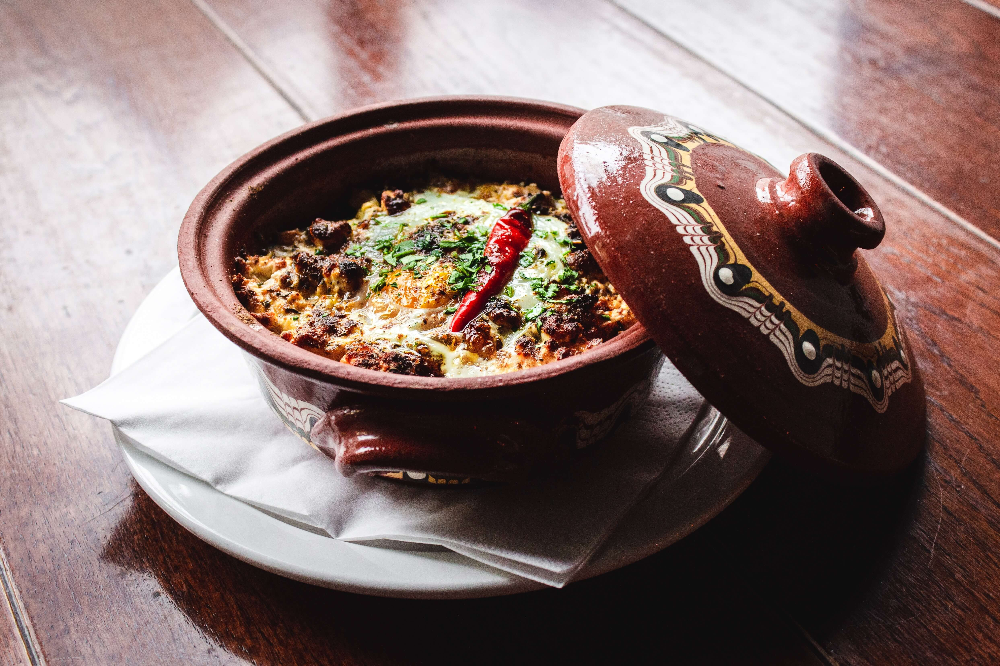
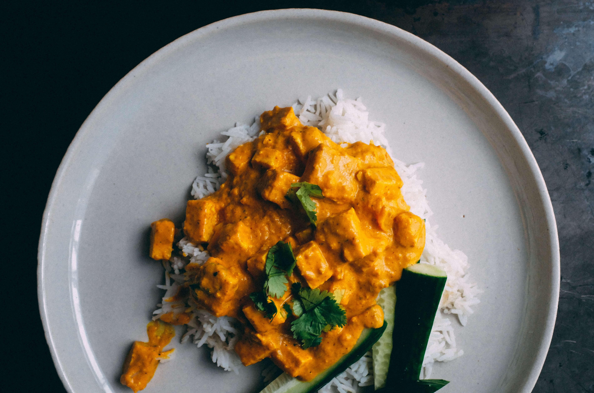

We will provide you our best rated recipe of the week regularly

Traditional Milk peda
Basic Ingredients List
Milk, Dry Fruits, Kesar
Traditional Milk peda - Instructions
- Firstly, in a large kadai take 5 cup milk. use good quality milk for a more creamy texture.
- Stir occasionally to prevent milk from sticking to the bottom and burning.
- Get the milk to a boil.
- Stir continuously, and the milk thickens in 8 minutes.
- After 30 minutes, the milk turns creamy texture.
- Keep stirring on low flame, to prevent milk from burning.
- After 50 minutes, it turns to a paste kinda texture.
- Now add ¼ cup sugar. add more sugar if you prefer.
- Keep stirring till the sugar dissolves.
- Continue to cook on low flame until the mixture separates from the pan and holds shape.
- Cool slightly and take a small ball sized ball.
- Roll to a ball and design using the mould. you can also decorate using a toothpick or fork.
- Finally, serve doodh peda or milk peda for a week when stored in an airtight container.

Clay Pot Biryani
Basic Ingredients List
Rice, Spices, Vegetables, Dry fruits
Clay Pot Biryani - Instructions
- Firstly, take a small clay pot and grease with 1 tsp ghee.
- Layer ladleful of prepared biryani gravy and level it.
- Now add 2 tbsp fried onions, 1 tbsp coriander and 1 tbsp mint.
- Layer the half cooked rice filling the matka.
- Sprinkle in 1 tbsp coriander and 1 tbsp mint and 1 tbsp fried onions.
- Also, add 1 tsp ghee, sprinkle pinch biryani masala and 3 tbsp saffron water.
- Over with aluminium foil sealing it completely.
- Cook on low flame for 20 minutes or until rice is cooked well.
- Rest for 30 minutes before opening.
- Finally, serve veg matka biryani with raita and salan.

Paneer Butter Masala
Basic Ingredients List
Onions, Tomatoes, Spices, Cheese
Paneer Butter Masala - Instructions
- Firstly, in a large kadai heat 2 tbsp oil, 2 tbsp butter, 1 bay leaf and 1 chilli.
- Saute until the spices turn aromatic.
- Now add 1 onion and saute until onions turn and golden brown.
- Keeping the flame on low, add ½ tsp turmeric, 1 tsp chilli powder, ¾ tsp coriander powder, ¼ tsp cumin powder, ½ garam masala and 1 tsp salt.
- Saute until the spices turn aromatic. make sure not to burn the spices.
- Add in prepared onion tomato paste and mix well.
- Cook until the oil separates from the masala paste.
- Now add 1 cup water and mix well adjusting the consistency.
- Further, add in 2 tbsp cream and mix well.
- Also, add 16 cubes of paneer and mix gently.
- Simmer for 5 minutes, or until the paneer absorbs the flavour.
- Add 1 tsp kasuri methi and 2 tbsp coriander. mix well.
- finally, enjoy paneer butter masala with roti or naan.